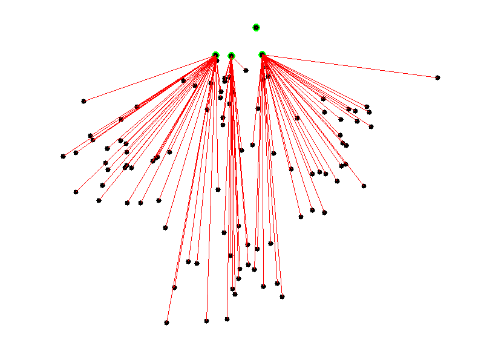

Five algorithms easy to understand
(that you probably don't know)
Finite step list to solve a problem.
An algorithm must be seen to be believed.
— Donald Knuth
Safe cryptographic hash functions
Functions to map arbitrary long data blobs to fixed-length integer numbers.
A cryptographic hash function has three propoerties:
- Pre-image resistance. Given a hash, it is note feasible to find a message with that hash.
- Second pre-image resistance. Given a message, it is not feasible to find another message with the same hash.
- Collision resistance. It is not feasible to find two messages with the same hash.
A little modification in the message causes a total change in the hash.
Message: one ring to rule them all
SHA1: f0de86727cf32a37a8f6fdab54a62d1d910db235Message: one ring to rule them al1
SHA1: d302c585c7e212822ed087e949216f9123657ebcWith 160 bits, you have 2160, or about 1048 (1 with 48 zeros after it), possible SHA1 hashes. That number is just incomprehensibly huge. Even if you hired a trillion people to produce a trillion new unique blobs per second for a trillion years, you would still only have about 1043 blobs.
If you hashed 2 80 random blobs, you might find a collision.
— From the book Version Control with Git
Cryptographic hash functions has lots of uses:
- Verify message integrity.
- Verify password without transmitting them.
- Unequivocal identifications of files.
- Pseudorandomly number generation.
- Key derivation.
Of interest:
List of cryptographic hash functions at Wikipedia.
Git uses SHA1 hash function to check if a folder or file has changed.
There are mechanisms to attack hash functions such as that allowing to forgea couple of X.509 certificates with the same signature.
Proof of work
It is not and algorithm.
It is a system to verify if a protocol actor has spent some time performing an action.
Challenge / Answer:
Like in Telegram.
Solution verification:
Like in Bitcoin.
Some applications:
- Defense against DoS attacks.
- Avoid spam.
- Keep distributed system desentralization.
The proof of work is the answer to a question that must be...
- ...hard to solve.
- ...but easy to verify.
For instance, one of the so-called proof-of-work functions such as...
Hashcash
Designed to prevent spam.
It's supported by the use of SHA1.
When sendin an e-mail, from the sender:
- Generate a string with the recipient's e-mail, the date and a random number.
- Hash the string with the SHA1 function.
- Check if the resulting hash starts by 20 zeroes.
- If not, the random number is increased and return to the second step.
- Includes the string as an e-mail header.
When receiving an e-mail, the recipient:
- Extract the string from the header.
- Pass the SHA1 function to the string.
- If the string does not start by 20 zeroes, reject the e-mail.
- If the date is far two days from the present, reject the el e-mail.
- If the e-mail address is not in a white-list, reject the e-mail.
- The hash is stored in a DB. If it already exists, reject the e-mail.
Of interest
Hashcash was introduced by Adam Back in 1997
As the computational power increases, the number of required zeroes does at well.
Bitcoin uses Hashcash to perform the so-called bitcoin mining.
Centroid-based clustering
It is a technique to classify data in groups.
Each group has a representative, the centroid...
...and the points being represented.
It is broadly used in machine learning.
How many groups are there?
The number of groups, k is provided by the user.
k-Means
Formally, it computes the Voronoi diagram for k points.
The diagram is a partition of k groups where coloured regions are the closest areas for the point they keep..
We choose k random points (i.e. 4).

We assign to each centroid the closest points.
And recompute the centroids as the average point of the group.
We can iterate a predefined number of steps or until the algorithm to converge.
The result...

Of interest:
The algorithm was proposed by Stuart Lloyd from Bell laboratories in 1957 but it was not published until 1982.
E. W. Forgy published almost the same method in 1965.
The former animation belongs to Kickammender, a service for classifying Kickstarter projects.
pngquant es un programa para reducir el tamaño de imágenes PNG mediante cuantización de color.
MapReduce
MapReduce is not an algorithm.
It is a programming model.
But there are highly paralelizable algorithms that can be adapted to MapReduce.
MapReduce consists into classifying values and aggreging them.
It is more or less equivalent to the following SQL code:
SELECT key, AGGREGATION(value)
FROM table
GROUP BY key
ORDER BY keyBut with the difference that in MapReduce, we provide the behaviours for AGGREGATION and GROUP BY.
- map
- Is the grouping function.
map :: data -> (key, value) - reduce
- Is the aggregation function.
reduce :: (key, [values]) -> (key, aggregated-value)
Example: count the number of shapes of each color.
Prepare Map processors:
It suffices with one processor by key but it could be more to provide redundancy.
Execute the map() function for input data.

def map(shape, star):
return (star.color, 1)
Prepare Reduce processors:
It suffices with a processor by key again.
Execute the reduce() function for the key-grouped data.
def reduce(color, values):
return (color, sum(values))
Sort results by key:

Assuming Blue, Red and Green.
This way of counting is an algorithm.
An algorithm for MapReduce.
k-Mean for MapReduce
The map() function classify the points into groups.
def map(id, point):
global centroids
distances = \
[(id, point.distance(c)) for id, c in enumerate(centroids)]
closest_centroid, _ = \
min(distancias, key=lambda i: i[0])
return (closest_centroid, point)
The reduce() function calculate the new centroids.
def reduce(centrode_id, points):
global centroids
avg = lambda l: sum(l) / len(l)
new_centroid = \
Point(
avg(p.x for p in points),
avg(p.y for p in points)
)
centroids[centroid_id] = new_centroid
return (centroid_id, new_centroid)
Now repeat a finite number of steps...
Or until centroids keep unvariable.
Comparison with centroids is 100% paralelizable.
So the algorithm could split data into N machines...
Targeting speed-ups up to N in the grouping stage.
Of interest:
MapReduce was invented (and patent) by Google in 2004.
The free implementation is Hadoop from Apache.
You can find the results of several k-Means MapReduce implementations on the Internet
Linear time sorting
What is the best running time we can expect from a sorting algorithm?
You're probably thinking about Quicksort

In the average case: O(n log n)
But it can be better...
Counting sort
Consider the following list:
var list = [2, 5, 3, 0, 2, 3, 0, 3];Let's count the number of distinct values:
var count = [0, 0, 0, 0, 0, 0];
list.forEach(function (value) { count[value]++; });
// count: [2, 0, 2, 3, 0, 1]But let's fix the list to keep the total amount of values less or equal to each of the possible ones:
for (var i = 1; i < count.length; i++) {
count[i] += count[i-1];
}
// count: [2, 2, 4, 7, 7, 8]This counting matches, for each possible value with the index at, starting from it, we won't find that value again.
// Remember list = [2, 5, 3, 0, 2, 3, 0, 3] y
// count: [2, 2, 4, 7, 7, 8]
// So value 2 will be at most at position (4 - 1);
// the 5 value, at 7 (8 - 1);
// the 3 value, at 6 (7 - 1);
// ...So we can pass through the original list looking at where each value fits and fixing the counting vector each time we place a new value:
var sorted = [];
// sorting backwards to keep the sorting algorithm stable
for (var i = list.length - 1; i >= 0; i++) {
var value = list[i];
var rightPosition = count[value] - 1;
sorted[rightPosition] = value;
count[value]--;
}
// sorted: [0, 0, 2, 2, 3, 3, 3, 5]This algorithm iterates once over the original list and twice on the counting vector. If the length of the vector is n and the counting vector is k, then...
...the algorithm operates on:
Θ (n + k)
But what about if the list is?
var list = [1, 0, 5, 3, 9, 8, 2, 0, 3, 5, 1, 19890];Now k dominates over n.
What can we do?
Radix sorting
Consider the following list:
var list = [329, 457, 657, 839, 436, 720, 355];We can sort the numbers attending to each of its d dígis.
Let's start with units...
var list = [720, 355, 436, 457, 657, 329, 839];We follow with tens:
var list = [720, 329, 436, 839, 355, 457, 657];And finally hundreds:
var list = [329, 355, 436, 457, 657, 720, 839];It is easy to see the algorithm complexity is in:
Θ (d · sort-complexity)
If d is constant, complexity is dominated by that from the sorting algorithm used for each digit.
And how to sort by each digit?
With counting sort!
So sort-complexity = Θ (n + k) with k = 10 constant, and so the overall complexity for radix sorting will be:
Θ (d · (n + k))
And observing that d is constant too and that k can be very small compared with the proper n, we have radix sort has a complexity of:
Θ (n)
Of interest:
Both algorithms were invented by Harold H. Seward in 1954.
An more detailed explanation can be found in the book Introduction to Algorithms.
You can see a performance comparison where radix sorting es 5 times faster than qsort for integers.
About me

- me
- Salvador de la Puente González
- @salvadelapuente
- My web sites
- http://unoyunodiez.com
http://github.com/delapuente